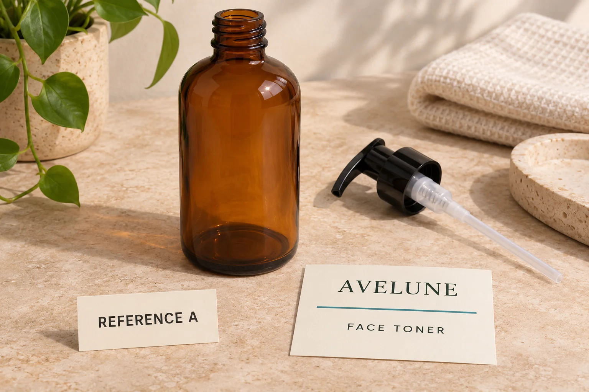
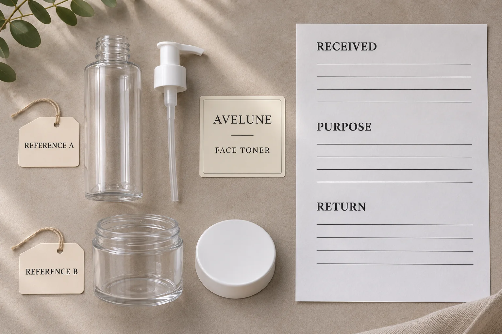

Before sending a bottle to a label printer, agree what the reference must help decide. An unused empty bottle may be enough for an initial size or placement discussion. It cannot demonstrate how the filled pack looks or how a label behaves during actual use. If the review needs product contents, residues or a used pack, obtain the receiver's agreement and the carrier's acceptance before dispatch.
The useful shipment is the one the receiving team can identify and use for the agreed task. Sending an unmarked bottle without a revision, purpose or return instruction can leave the original sampling question unresolved. First confirm the reference and its limitations; then discuss freight.

Choose the reference around the question
For usable panel dimensions, identify the actual bottle supplier, component code and revision. Ask whether the reviewer needs one container, several examples, a drawing or another reference. A different bottle with the same nominal volume may not reproduce the label area. Use the bottle label size guide to prepare measurements, and have the receiving party confirm what physical reference is useful.
For appearance on a filled transparent or tinted pack, a photograph, a controlled mockup and an actual filled reference can answer different parts of the question. State which is being provided. A stand-in fill may support a limited visual discussion if everyone accepts its limitation; it does not establish compatibility with the actual formulation.
For adhesion, oil contact or handling, ask the responsible reviewer which container condition and product information are needed. A pristine unused surface and a bottle exposed to filling or use are different references. Do not clean, refill or substitute a component merely to make shipping easier while continuing to describe it as the original test condition.
Separate technical usefulness from transport acceptance
A reference can be technically useful and still need a different shipping arrangement. Ask the receiving contact whether the proposed item can be accepted at that address and what identification or documents they require. Do not assume the printer accepts liquids, used packs, confidential formulations or every type of cosmetic sample.
DHL Express's shipping guidance identifies perfumes, aerosols and other hazardous goods among items that can require prior approval. Its instructions are a reason to check the actual contents and route before shipping. They do not classify your sample or approve a particular parcel. Ask your selected carrier or qualified shipping contact to resolve that question for the proposed origin, destination and service.
If the actual product cannot be sent through the proposed route, discuss a staged review: an identified empty component for an initial fit discussion, followed by the necessary filled-pack work through an accepted arrangement. Keep the deferred decision explicit. Removing the liquid changes what the reference can show; it does not complete the original performance review.
Complete a dispatch brief before booking
Use this editorial record to agree the reference with the receiver. It is a purchasing handoff, not a shipping declaration or dangerous-goods packing instruction.
| Field | Buyer input | Confirmation needed |
|---|---|---|
| Purpose and identity | Decision to support, component code/revision, artwork and reference ID. | Receiver agrees that this reference can support the stated review. |
| Condition and limits | Unused, filled, used or substituted condition; contents and changes disclosed. | Reviewer records what remains untested or unrepresentative. |
| Receipt and transport | Item description, quantity, origin, destination and receiving contact. | Receiver and carrier confirm their respective acceptance and required documentation. |
| Handling after review | Requested retention, return or disposal; deadline and contact. | Recipient confirms feasible handling, charges and any return arrangements. |
Start with the purchasing decision and assign a reference ID. Obtain a response to the condition and limitations, then settle receipt and transport before booking. Finally, agree what happens after review. Retain the brief and the receiver's response with the tracking reference so the delivered object can be connected to the right job.

Ask what happens to your reference
A reviewer may need to apply labels, mark positions or otherwise consume a reference during the agreed work. Ask about that before sending an irreplaceable display pack or your only retained bottle. Confirm whether a reference will be altered, retained, returned or disposed of and which party authorizes the action. Do not assume return freight or indefinite storage is included.
If several versions are sent, list them individually. For example, a hypothetical toner project has an unused bottle from a new supplier and an older filled retail pack. Give them different reference IDs and explain the intended comparison. The old pack may show the desired visual position while the new component is the proposed production surface. A receiving team should not have to infer which one to label.
Close the receipt gap without upgrading the evidence
Ask the receiving contact to confirm which references arrived, their visible condition and whether any requested item is missing. A carrier delivery scan does not tell the reviewer which revision was in the carton. If a bottle arrives cracked, its identity is uncertain or its contents differ from the brief, pause the affected review and agree the next reference.
Keep the later sample output separate from this receipt record. Use the sample quote deliverables guide to agree the work being purchased and the adhesive sample plan to define observations. Successfully delivering a bottle approves neither the label material nor the filled pack.
Agree a reference before sending it
For cosmetic labels, provide the bottle photo, component identity, intended review, current condition and whether contents are involved. Ask what reference YT can accept and which work it would support before dispatch. The form prepares a message; send files and the reference brief through the existing email or WhatsApp route.
Prepare a sample reference inquiry